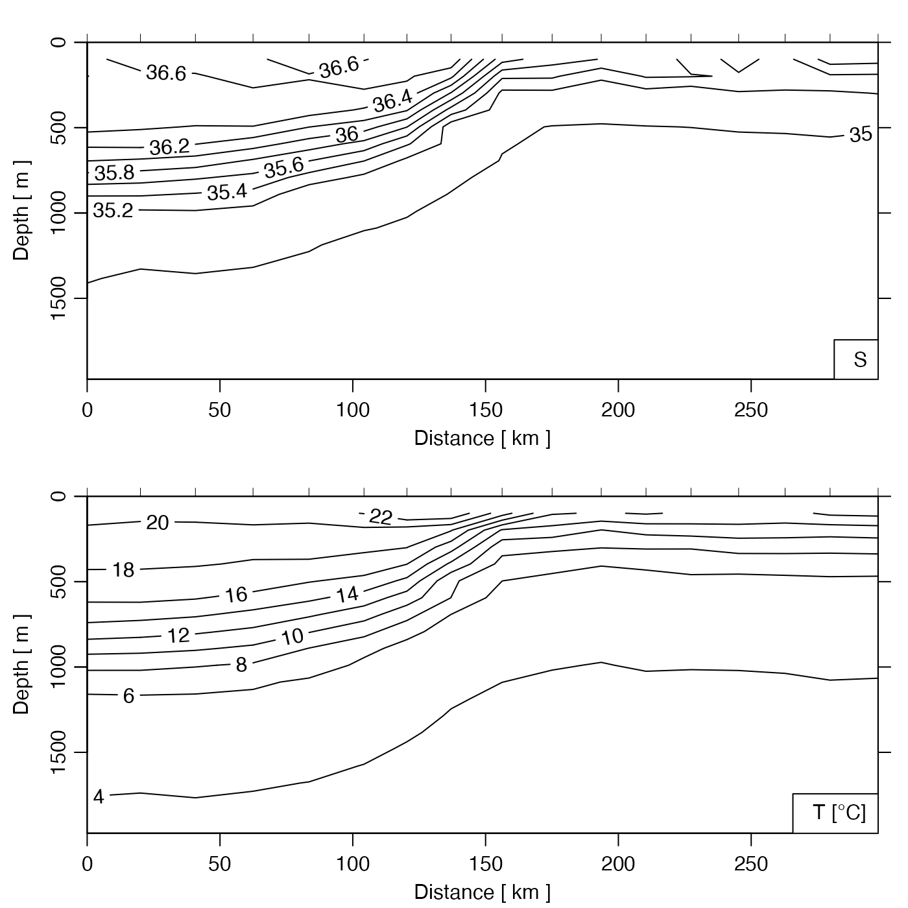

Creates a summary plot for a CTD section, with one panel for each value of
which.
# S4 method for section
plot(
x,
which = c(1, 2, 3, 99),
eos,
at = NULL,
labels = TRUE,
grid = FALSE,
contourLevels = NULL,
contourLabels = NULL,
stationIndices,
coastline = "best",
xlim = NULL,
ylim = NULL,
zlim = NULL,
zbreaks = NULL,
zcol = NULL,
map.xlim = NULL,
map.ylim = NULL,
clongitude,
clatitude,
span,
projection = NULL,
xtype = "distance",
ytype = "depth",
ztype = "contour",
longitude0,
latitude0,
legend.loc = "bottomright",
legend.text = NULL,
showStations = FALSE,
showStart = TRUE,
stationTicks = TRUE,
showBottom = TRUE,
showSpine = TRUE,
drawPalette = TRUE,
axes = TRUE,
mgp,
mar,
col,
cex,
pch,
labcex = 1,
debug,
...
)Arguments
- x
a section object.
- which
a list of desired plot types, as explained in “Details”. There may be up to four panels in total, and the desired plots are placed in these panels, in reading order. If only one panel is plotted,
paris not adjusted, which makes it easy to add to the plot with subsequent plotting commands.- eos
Character indication of the seawater equation of state to use. The permitted choices are
"gsw"and"unesco". Ifeosis not supplied, it defaults togetOption("oceEOS",default="gsw").- at
If
NULL(the default), the x axis will indicate the distance of the stations from the first in the section. (This may give errors in the contouring routine, if the stations are not present in a geographical order.) If a list, then it indicates the values at which stations will be plotted.- labels
Either a logical, indicating whether to put labels on the x axis, or a vector that is a list of labels to be placed at the x positions indicated by
at.- grid
If
TRUE, points are drawn at data locations.- contourLevels
Optional contour levels.
- contourLabels
Optional contour labels.
- stationIndices
Optional list of the indices of stations to use. Note that an index is not a station number, e.g. to show the first 4 stations, use
station.indices=1:4.- coastline
Either a coastline object to be used, or a string. In the second case, the permitted choices are
"best"(the default) to pick a variant that suits the scale,"coastlineWorld"for the coarse version that is provided by oce,"coastlineWorldMedium"or"coastlineWorldFine"for two coastlines provided by the ocedata package, or"none", to avoid drawing a coastline.- xlim
Optional limit for x axis (only in sections, not map).
- ylim
Optional limit for y axis (only in sections, not map)
- zlim, zbreaks, zcol
Elements that control colours for
imageandpointsplot types, i.e. ifztypeis either"points"or"image".zlimis a two-element numerical vector specifying the limit on the plotted field. If not provided, it defaults to the data range.zbreakscontrols the colour breaks, in a manner that is similar to theimage()parameter namedbreaks. If not provided,zbreaksis inferred fromzlim.zcol, which controls the colour scheme, may be a vector of colours (of length 1 less thanzbreaks), or a function that takes an integer as its sole argument and returns that number of colours. If not provided,zcoldefaults tooceColorsViridis(). These three parameters are used in Example 6, an illustration of Atlantic salinity along 36N.- map.xlim, map.ylim
Optional limits for station map;
map.ylimis ignored ifmap.xlimis provided.- clongitude, clatitude, span
Optional map centre position and span (km).
- projection
Parameter specifying map projection; see
mapPlot(). Ifprojection="automatic", however, a projection is devised from the data, withstereographicif the mean latitude exceeds 70N andmollweideotherwise.- xtype
Type of x axis, for contour plots, either
"distance"for distance (in km) to the first point in the section,"track"for distance along the cruise track,"longitude","latitude","time"or"spine"(distance along a spine that was added withaddSpine()). Note that if the x values are not in order, they will be put in order, and since that might not make physical sense, a warning will be issued.- ytype
Type of y axis for contour plots, either
"pressure"for pressure (in dbar, with zero at the surface) or"depth"for depth (in m below the surface, calculated from pressure withswDepth()).- ztype
String indicating whether to how to indicate the "z" data (in the R sense, i.e. this could be salinity, temperature, etc; it does not mean the vertical coordinate) The choices are:
"contour"for contours,"image"for an image (drawn withimagep()withfilledContours=TRUE), or"points"to draw points. In the first two cases, the data must be gridded, with identical pressures at each station.- longitude0, latitude0
Location of the point from which distance is measured. These values are ignored unless
xtypeis"distance".- legend.loc
Location of legend, as supplied to
legend(), or set to the empty string to avoid plotting a legend.- legend.text
character value indicating the text for the legend. If this is NULL (the default) then the legend is automatically constructed by
labelWithUnit(), based on the value ofwhich.- showStations
Logical indicating whether to draw station numbers on maps.
- showStart
Logical indicating whether to indicate the first station with
- stationTicks
A logical value indicating whether to indicate station locations with ticks at the top margin of cross-section plots. Setting this parameter to
FALSEfrees the user up to do their own labelling at this spot.- showBottom
a value indicating whether (and how) to indicate the ocean bottom on cross-section views. There are three possibilities. (a) If
showBottomisFALSE, then the bottom is not rendered. If it isTRUE, then the bottom is rendered with a gray polygon. (b) IfshowBottomis the character value"polygon", then a polygon is drawn, and similarly lines are drawn for"lines", and points for"points". (c) IfshowBottomis a topo object, then the station locations are interpolated to that topography and the results are shown with a polygon. See “Examples”.- showSpine
logical value used if
which="map". IfshowSpineisTRUEandsectionhas had a spine added withaddSpine(), then the spine is drawn in blue.- drawPalette
Logical value indicating whether to draw a palette when
ztype="image"ignored otherwise.- axes
Logical value indicating whether to draw axes.
- mgp
A 3-element numerical vector to use for
par(mgp), and also forpar(mar), computed from this. If not provided, this defaults togetOption("oceMgp").- mar
Value to be used with
par("mar"). If not provided, a default is set up.- col
Color for line types. If not provided, this defaults to
par("col"). Seezcol, forztype="image"andztype="points".- cex
Numerical character-expansion factor, which defaults to
par("cex").- pch
Indication of symbol type; defaults to
par("pch").- labcex
Size of characters in contour labels (passed to
contour()).- debug
an integer specifying whether debugging information is to be printed during the processing. This is a general parameter that is used by many
ocefunctions. Generally, settingdebug=0turns off the printing, while higher values suggest that more information be printed. Ifdebugis not supplied, it defaults togetOption("oceDebug").- ...
Optional arguments passed to the contouring function.
Value
If the original section was gridded, the return value is that section. Otherwise, the gridded section that was constructed for the plot is returned. In both cases, the value is returned silently. The purpose of returning the section is to enable subsequent processing of the grid, including adding elements to the plot (see example 5).
Details
The type of plot is governed by which, as follows.
which=0or"potential temperature"for potential temperature contourswhich=1or"temperature"for in-situ temperature contours (the default)which=2or"salinity"for salinity contourswhich=3or"sigmaTheta"for sigma-theta contourswhich=4or"nitrate"for nitrate concentration contourswhich=5or"nitrite"for nitrite concentration contourswhich=6or"oxygen"for oxygen concentration contourswhich=7or"phosphate"for phosphate concentration contourswhich=8or"silicate"for silicate concentration contourswhich=9or"u"for eastward velocitywhich=10or"uz"for vertical derivative of eastward velocitywhich=11or"v"for northward velocitywhich=12or"vz"for vertical derivative of northward velocitywhich=20or"data"for a dot for each data locationwhich=99or"map"for a location map
The y-axis for the contours is pressure, plotted in the conventional reversed
form, so that the water surface appears at the top of the plot. The x-axis is
more complicated. If at is not supplied, then the routine calculates x
as the distance between the first station in the section and each of the other
stations. (This will produce an error if the stations are not ordered
geographically, because the contour() routine cannot handle
non-increasing axis coordinates.) If at is specified, then it is taken
to be the location, in arbitrary units, along the x-axis of labels specified by
labels; the way this works is designed to be the same as for
axis().
See also
The documentation for section explains the structure of section objects, and also outlines the other functions dealing with them.
Other functions that plot oce data:
download.amsr(),
plot,adp-method,
plot,adv-method,
plot,amsr-method,
plot,argo-method,
plot,bremen-method,
plot,cm-method,
plot,coastline-method,
plot,ctd-method,
plot,gps-method,
plot,ladp-method,
plot,landsat-method,
plot,lisst-method,
plot,lobo-method,
plot,met-method,
plot,odf-method,
plot,rsk-method,
plot,satellite-method,
plot,sealevel-method,
plot,tidem-method,
plot,topo-method,
plot,windrose-method,
plot,xbt-method,
plotProfile(),
plotScan(),
plotTS(),
tidem-class
Other things related to section data:
[[,section-method,
[[<-,section-method,
as.section(),
handleFlags,section-method,
initializeFlagScheme,section-method,
read.section(),
section-class,
sectionAddStation(),
sectionGrid(),
sectionSmooth(),
sectionSort(),
section,
subset,section-method,
summary,section-method
Examples
library(oce)
data(section)
sg <- sectionGrid(section)
# 1. start of section, default fields.
plot(head(section))

# 2. Gulf Stream
GS <- subset(section, 109<=stationId&stationId<=129)
GSg <- sectionGrid(GS, p=seq(0, 2000, 100))
plot(GSg, which=c(1, 99), map.ylim=c(34, 42))
par(mfrow=c(2, 1))
plot(GS, which=1, ylim=c(2000, 0), ztype='points',
zbreaks=seq(0,30,2), pch=20, cex=3)
plot(GSg, which=1, ztype='image', zbreaks=seq(0,30,2))
 par(mfrow=c(1, 1))
# 3. Image, with colored dots to indicate grid-data mismatch.
if (FALSE) {
plot(GSg, which=1, ztype='image')
T <- GS[['temperature']]
col <- oceColorsViridis(100)[rescale(T, rlow=1, rhigh=100)]
points(GS[['distance']],GS[['depth']],pch=20,cex=3,col='white')
points(GS[['distance']],GS[['depth']],pch=20,cex=2.5,col=col)
}
if (FALSE) {
# 4. Image of Absolute Salinity, with 4-minute bathymetry
# It's easy to calculate the desired area for the bathymetry,
# but for brevity we'll hard-code it. Note that download.topo()
# caches the file locally.
f <- download.topo(west=-80, east=0, south=35, north=40, resolution=4)
t <- read.topo(f)
plot(section, which="SA", xtype="longitude", ztype="image", showBottom=t)
}
if (FALSE) {
# 5. Temperature with salinity added in red
s <- plot(section, which="temperature")
distance <- s[["distance", "byStation"]]
depth <- s[["station", 1]][["depth"]]
salinity <- matrix(s[["salinity"]], byrow=TRUE, nrow=length(s[["station"]]))
contour(distance, depth, salinity, col=2, add=TRUE)
}
if (FALSE) {
# 6. Image with controlled colours
plot(section, which="salinity", ztype="image",
zlim=c(35, 37.5),
zbreaks=seq(35, 37.5, 0.25),
zcol=oceColorsTurbo)
}
par(mfrow=c(1, 1))
# 3. Image, with colored dots to indicate grid-data mismatch.
if (FALSE) {
plot(GSg, which=1, ztype='image')
T <- GS[['temperature']]
col <- oceColorsViridis(100)[rescale(T, rlow=1, rhigh=100)]
points(GS[['distance']],GS[['depth']],pch=20,cex=3,col='white')
points(GS[['distance']],GS[['depth']],pch=20,cex=2.5,col=col)
}
if (FALSE) {
# 4. Image of Absolute Salinity, with 4-minute bathymetry
# It's easy to calculate the desired area for the bathymetry,
# but for brevity we'll hard-code it. Note that download.topo()
# caches the file locally.
f <- download.topo(west=-80, east=0, south=35, north=40, resolution=4)
t <- read.topo(f)
plot(section, which="SA", xtype="longitude", ztype="image", showBottom=t)
}
if (FALSE) {
# 5. Temperature with salinity added in red
s <- plot(section, which="temperature")
distance <- s[["distance", "byStation"]]
depth <- s[["station", 1]][["depth"]]
salinity <- matrix(s[["salinity"]], byrow=TRUE, nrow=length(s[["station"]]))
contour(distance, depth, salinity, col=2, add=TRUE)
}
if (FALSE) {
# 6. Image with controlled colours
plot(section, which="salinity", ztype="image",
zlim=c(35, 37.5),
zbreaks=seq(35, 37.5, 0.25),
zcol=oceColorsTurbo)
}